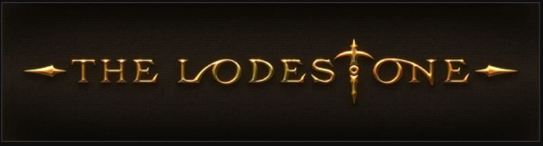
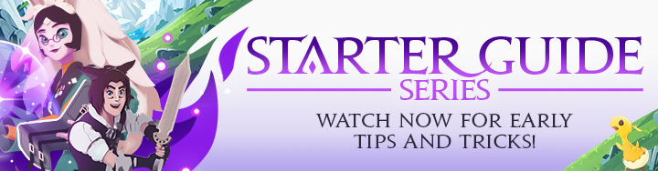

Here are some links to a few helpful pages
The one stop place for any news, updates and basic guides for the game.
A Guide for beginners, that shows both some in-game video, and also some animated explanations in cartoon form. The videos explains the basics of the game in a fun and easy to understand way.
Here is a link to the Lodestone page for the Starter Guide as well
Here are some other great pages with some more detailed info on where to get items or which locations to quests start at.